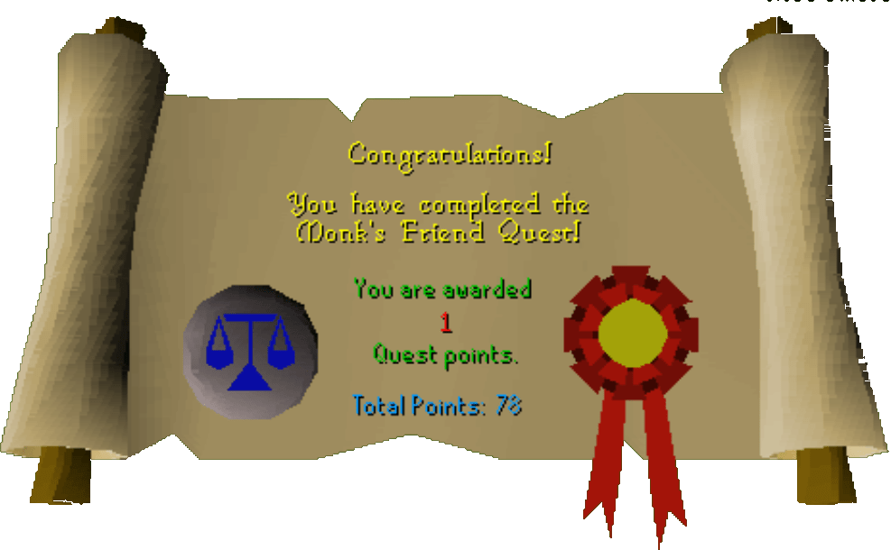

Monk's Friend
Description: A monk's child has had their blanket stolen. Find the thieves' den and return the blanket, then help Brother Omad organise the drinks for the child's birthday party.Difficulty: Novice
Length: Short
Items & Skills Needed:
- or
- Food or armor to run past some thieves (level 14 and 26)
Reward: 1 Quest point, 2,000 Woodcutting XP, 8 Law Runes
Instructions:
Talk to Omad and learn of his sleepless nights due to the crying child. He tells you that the thieves (level 14s and a 26) who stole the blanket are hiding in a secret cave.
Go northwest to a ring of stones (just east of the Gnome Battlefield). A ladder will appear—climb down into the den.
Take the first turn inside. Fight the thieves if necessary, then head to the table and retrieve the blanket. Return to Brother Omad.
Talk to him twice to learn that Brother Cedric hasn't returned with the wine for the child's party. Omad assumes Cedric probably got drunk and lost in the forest. (Poor guy.)
Go just north to find Cedric. He needs a drink of water, so use your jug with a sink in one of the Khazard guardhouses south of the monastery. Then return and use the jug on Cedric.
He'll ask you for wood to fix his broken cart—hopefully you already have it. Give him the wood and return to Omad one last time.
Talk to him and he'll give you the runes. Then, you party. Unfortunately, you can't burst the party balloons, but those monks really know how to get down, party, and boogie like there's no tomorrow.
Congratulations, Quest Complete!

This quest guide was written on RuneHQ by Gnat88.
This quest guide was entered into the database on Tue, Mar 02, 2004, at 10:10:53 PM by Weezy and was last updated on Wed, Mar 31, 2004, at 05:20:06 PM.